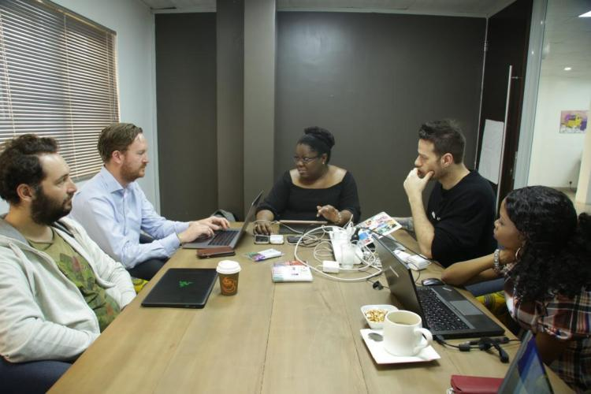

Published on April, 2019 by Daniel Osineye
In December 2018, the UNICEF Innovation Fund announced its largest investment round yet – thirteen new startup
companies using frontier technology solutions to create fairer opportunities for children. Among these 13 is a female-founded start-up
from Nigeria called Imisi 3D . According to the founder, Judith Okonkwo, Imisi 3D’s solution will provide
quality education tools through Virtual Reality (VR), which aims to enrich learning experiences for children.
“Our approach is broad-based, because we are looking to both engage people widely and get them to understand that the technology exists and what’s possible, as well as the specific applications of these technologies – a major one for us is VR for education — especially for children. We want them to be able to have more meaningful and experiential learning experiences.”
With UNICEF’s support, Imisi 3D will explore how to best develop innovative educational content based on curriculum needs and connectivity constraints of schools in Nigeria.
In January, a team from the UNICEF Innovation Fund in New York arrived in Lagos to work with Imisi 3D on a work plan that will turn their proposal into a reality. The one-week mission included a visit to a local junior high school to speak with students and teachers to better understand their needs and challenges. It also included a VR meetup with young people at the NG Hub in Lagos, where they were able to get hands-on session exploring Web XR and creating XR content using their laptops with UNICEF Innovation Fund cohort mentor Fabien Benetou. Apart from this, participants were also able to experience Imisi 3D’s VR through games and educational content and were asked to give their thoughts and opinions on the experience.
The UNICEF Innovation team, UNICEF Nigeria Country Office and Imisi 3D in a working session to enrich learning experiences for children using virtual reality technology.
IFTF is celebrating its 50th anniversary as the world’s leading non-profit strategic futures organization. The core of our work is identifying emerging discontinuities that will transform global society and the global marketplace. We provide organizations with insights into business strategy, design process, innovation, and social dilemmas. Our research spans a broad territory of deeply transformative trends, from health and health care to technology, the workplace, and human identity. IFTF is based in Palo Alto, California.

At the Imisi 3D creation lab, Judith Okonkwo explains how she plans to bring virtual reality to classrooms in Nigeria.
UNICEF’s Nigeria Country Office was instrumental in helping Imisi 3D and UNICEF’s Innovation Team develop a better understanding of the country context and education challenges in Nigeria, where more than 10.5 million children are out of school. Together, the teams explored the possibilities innovations like VR can bring to learning outcomes for children who can access it. Four key recommendations emerged from these discussions:
- The Imisi 3D project will start off in a public high school classroom in Lagos.
- Working with students and teachers, and guided by the national school curriculum, virtual reality content for subjects such as Maths and Basic Science will be introduced.
- Learning outcomes will be measured, using tests within the modules and school examination results.
- Teachers will help create locally-tailored content and will receive training on how to take a child through the modules.
Challenges were recognized – most schools in Nigeria have limited resources, erratic power supply and congested classrooms. However, with careful planning and improvisation, the hope is to put VR in the hands of school children across the state and country soon.
Fabien Benetou, from the UNICEF Innovation team, facilitating a Web XR session with participants at a meetup in Lagos.
“Imisi means ‘inspiration’ in Yoruba – and that is what’s possible with these technologies, that you can inspire, that you can do it in multiple dimensions and all the possibilities that come with that.”
Judith Okonkwo, Imisi 3D
Children who tried out virtual reality technology during the visit are already excited about the prospects of using it in schools. It will be fascinating to see how Imisi 3D’s project takes off in the pilot school, and to see more schools adopt virtual reality in classrooms to enrich school children’s learning experiences.
Judith Okonkwo, founder of Imisi 3D, working with Isu Muhamed Manager of the VR for Education Project
As ten-year-old Imran says “It’ll be so much easier to learn if we use VR technology in our classrooms! You can learn faster and better with it”